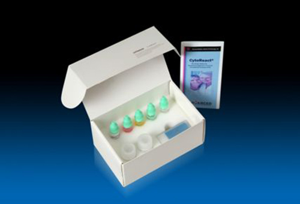

|
|
|


|
|
|||||||||||||
|
|||||||||||||
|
HPVL1简介
发布时间：2014-8-27 16:09:49
一、背景
人乳头瘤病毒（HPV）为宫颈癌的主要致癌因素。HPV 感染宿主时主要存在两种状态，一是游离于细胞核外（良性病变或癌前病变）；二是当宿主免疫状态低下时，HPV DNA与宿主细胞DNA整合后，随宿主细胞分裂而不断复制，宿主细胞表现出异常增殖（浸润癌），此时HPV壳蛋白L1为阴性表达。临床研究也表明，随着病变程度（CIN→原位癌→浸润癌）的加重，HPV L1壳蛋白阳性表达率呈下降趋势直至消失。另一方面，HPV-L1蛋白为免疫杀伤的主要靶位，激活局部细胞免疫反应，形成局部高浓度的免疫抗体，完成免疫清除功能。因此宫颈HPV L1的检测可用于体外HPV感染临床预后判断的参考指标。
二、赛泰-细胞/组织人乳头瘤病毒染色试剂盒
赛泰-细胞/组织人乳头瘤病毒染色试剂盒是通过美国FDA唯一认证的能够快速检测人乳头瘤病毒感染后宫颈病变是否发生自动消失或癌变的检测试剂盒。人乳头瘤病毒壳蛋白(HPV L1)诊断是以免疫组织/细胞化学和非同位素标记核酸分子杂交技术为基础，在同时采用核酸水平和免疫水平双重检测传染病病原体人乳头瘤病毒壳蛋白(HPVL1)的方法。这种DNA杂交和免疫组化双重使用的特点为：两种方法间相容性好，并有高灵敏性、高特异性、无假阴性的特点。能够识别宫颈细胞涂片或组织切片上的HPV宫颈病变相关亚型包括：HPV16 及其相关亚型--HPV31、35、52、33和HPV58；HPV18 及其相关亚型34、39、68、45、51、26、30和HPV56；另外还有能够或可能引起宫颈良性病变的HPV6、11、19、25、47、12、8、17、9 和HPV49、41、63、42。总计28种。
通过宫颈HPV L1的检测能告知医生和患者宫颈病变是否发生自愈或进展等预后信息。这对于宫颈癌的预后诊疗有一定的临床意义，有效减少或者避免过度治疗，提高医技水平。
三、赛泰实验室操作流程
1. 实验仪器及用品介绍
免疫组化湿盒
蒸锅
温度计
免疫组化染色缸
Mayer'er苏木素
水基的封片胶
2. 试剂作用简介
A液 2/5mL 赛泰® 过氧化氢阻断剂
B液 2/5mL 赛泰® HPV BS-L1
C液 2/5mL 赛泰® DNA探针标记聚合物、二抗
E液 2/5mL 赛泰® AEC色原液、碱性磷酸酶
F液 50/125mL 赛泰® 洗液 (10倍浓缩液)
G液 10/25mL 赛泰® 酸洗涤液(100倍浓缩液)
保存:赛泰®洗液(F液)室温保存.其它试剂盒内所有赛泰®试剂必须储存于摄氏4-8℃冰箱内;C液在染色前应提前恢复至室温(20–25℃).有效期2年。
3. 操作步骤
试剂准备：
1.洗液(F液)稀释：10倍稀释50/125毫升浓缩洗液。
2.酸洗涤液(G液)稀释：100倍稀释10/25毫升浓缩酸洗涤液，储存于摄氏2-8°C冰箱内备用。
3.Mayer`s苏木素制备（未提供）:苏木素 1g,蒸馏水 1000ml,碘酸钠 0.2g,硫酸钾铝（明矾）50g,冰醋酸20ml。将硫酸钾铝溶于蒸馏水内，待全部溶解后加入苏木素。待苏木素全部溶解后，分别加入碘化钠和冰醋酸，将全部溶液加热至沸腾后在室温下冷却，过滤后备用。
4.0.037mol/L氨水促蓝液的配制（未提供）:15mol/L的浓氨水2.5ml加入蒸馏水1000ml. 制备的余液可在室温下密封保存12个月。
特殊材料要求：
A:不同浓度的酒精及蒸馏水
B:蒸锅
C:水基的苏木素和封片剂
D.试验中使用的器具应为耐热塑料制品。
染色步骤：
1. 备片：已经加盖盖玻片的片子，需要将玻片在二甲苯溶液内浸泡(1-2小时)直至可以取下盖玻片而不至于造成涂层破损为止。新鲜的涂片或切片需要将玻片在96%的酒精中预先固定20分钟，待玻片自然干燥后再进行以下操作。
2. 脱蜡和水化：两次二甲苯脱蜡之后将玻片在以下不同浓度的酒精(96%, 75%, 50% )和蒸馏水-1缸中各浸泡2分钟重新润湿玻片。
3. 增加组织通透性和核酸探针穿透性及抗原热修复的酸洗涤：将G液倒入能容纳整个玻片架的耐热塑料盒内，将塑料盒加盖在蒸锅内预热至93℃后，将玻片架放入盒内使玻片完全浸入修复液中，加盖煮沸15分钟。之后将塑料盒(含玻片架)整体取出在室温下自然冷却25分钟。冷却后将玻片浸入洗液缸-1(F液)内1分钟，取出玻片用厚纸巾垂直吸干残余液体。
4. 内源性过氧化物酶消除: 在玻片上滴两滴(100微升)过氧化氢阻断剂(A液)，在室温下静置5分钟。将玻片浸入洗液缸-2(F液)内1分钟，取出玻片用厚纸巾垂直吸干残余液体。
5. 外源性HPVL1抗体：在玻片上滴两滴(100微升)HPV BS-L1(B液)，在室温下静置30分钟。将玻片浸入洗液缸-3(F液)内1分钟，取出玻片用厚纸巾垂直吸干残余液体。
6.DNA杂交及二次外源性抗体：在玻片上滴两滴(100微升)DNA探针标记聚合物及二抗混合液(C液)，在室温下静置30分钟。将玻片浸入洗液缸-4(F液)内1分钟，取出玻片用厚纸巾垂直吸干残余液体。
7.杂交碱性磷酸酶染色和免疫组化AEC染色：在玻片上滴两滴(100微升)AEC色原液(E液)，在室温下静置15-30分钟。将玻片浸入蒸馏水缸-2内1分钟，取出玻片用厚纸巾垂直吸干残余液体。
8.复染及返蓝：将玻片浸泡在Mayer`s苏木素内快速浸染15秒后将玻片浸入蒸馏水缸-3内2分钟。将玻片在0.037 mol/L氨水促蓝液内快速蘸染10次后将玻片浸入蒸馏水缸-4内5分钟。
9. 封片：直接用水性封片剂封片。显微镜下阅片。
4. 注意事项
1.AEC染色剂可以被有机溶剂溶解，所以乙醇基的苏木精(Hematoxylin)和二甲苯基的封片剂(mounting medium )都会造成染色消褪。故本染色必须用水基的苏木精和封片剂;
2.因为AEC染色在光线照射下一周后会褪色，因此染色后的玻片应室温暗盒保存。
3.在整个操作过程中应避免玻片干燥。
4.建议应在保质期内使用本试剂盒，超过保质期可能导致假阴性染色。
 |
|